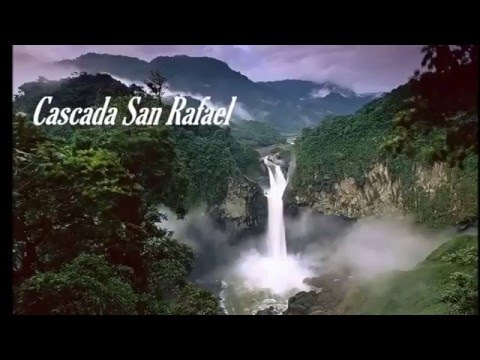
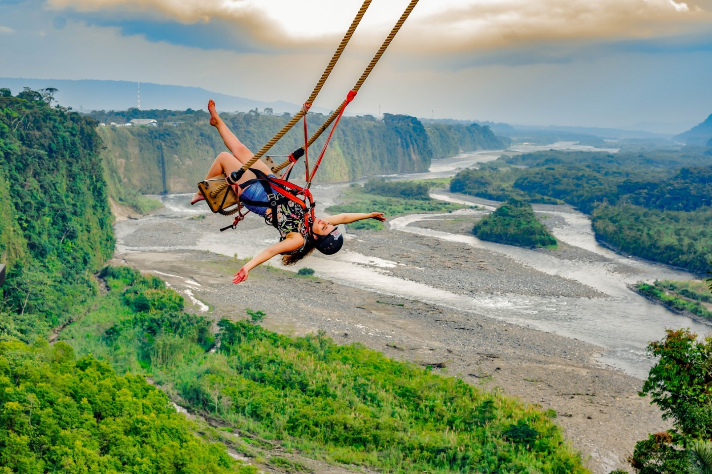
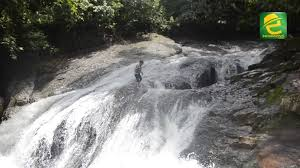

Cascada san Rafael
El encanto de la Amazonía ecuatoriana, nos permite disfrutar de una de sus maravillas,
la cascada de San Rafael, con una altura de 150 metros y 14 metros de ancho,
es la más alta y espectacular de todo el Ecuador.
Está localizada en la zona de transición entre la cordillera Andina y la región Amazónica
del país (forma parte de la “Reserva de Biosfera Sumaco” concedida por la
UNESCO el 10 de noviembre del 2000, únicamente a las áreas protegidas de gran valor
cultural y natural), y como tal contiene una diversidad altísima de especies de flora y fauna.
Debido a su grandeza, las cascadas se han convertido en un símbolo del eco-turismo en Ecuador,
un país que hizo noticia en 2008 por ser la primera nación que otorgase derechos constitucionales a la naturaleza.

Mirador Amazónico del Río Pastaza en la Vía Baños Puyo
El sitio es ideal para los amantes del paisajismo, la fotografía y la adrenalina,
a la espectacular vista panorámica que forma el cañón del río Pastaza se suma el impresionante
columpio cuyos movimientos pendulares elevan a los
visitantes a cientos de metros de altura sobre el vacío del imponente cañón.
La atención es de lunes a domingo, de 9 de la mañana a 6 de la tarde, el costo para niños es
de 1 dólar y para adultos de 3 dólares, en el lugar se ofertan servicios de alimentación,
parqueadero, guardianía y venta de souvenirs.

Cascadas en San Luis de El Acho - Santiago de Mendez
Las Cascadas del Bombiza,
Un hermoso paisaje para disfrutar en familia y con amigos estan ubicadas a 5 minutos de la
Cabecera Parroquial de San Luis del Acho y A 10km de distancia desde Santiago de Mendez.
